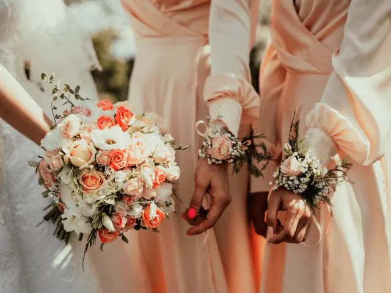
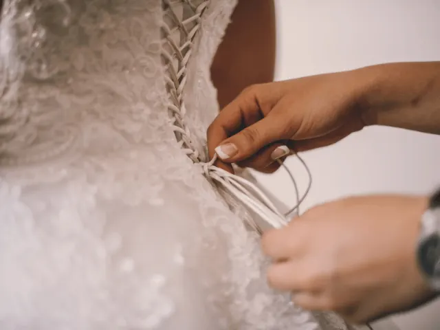

Partnerbijdrage
Waar scoor ik die te gekke trouwjurk?
Gepubliceerd op 30 maart 2023, bijgewerkt op 24 januari 2024
Onderdeel van de gids Trouwen in Nijmegen

Je trouwdag is een van de meest bijzondere dagen in je leven, en de jurk die je draagt is een belangrijk onderdeel van deze dag. Als je gaat trouwen in Nijmegen, dan heb je geluk, want er zijn talloze mogelijkheden om de perfecte trouwjurk te scoren. In deze blog geven we je een aantal tips en suggesties voor het vinden van die te gekke trouwjurk in Nijmegen.
Begin op tijd
Het is belangrijk om op tijd te beginnen met het zoeken naar je trouwjurk. Zo heb je genoeg tijd om verschillende winkels te bezoeken en verschillende stijlen en maten te passen. Houd er ook rekening mee dat sommige bruidswinkels werken met levertijden, waardoor het even kan duren voordat je jouw droomjurk in huis hebt.
Maak een afspraak
Veel bruidswinkels werken op afspraak. Dit is handig omdat je zo zeker weet dat je alle aandacht krijgt en dat je niet hoeft te wachten tot er een paskamer vrijkomt. Het kan ook handig zijn om van tevoren aan te geven welke stijl je mooi vindt, zodat de winkel hier rekening mee kan houden bij het selecteren van de juiste jurken.
Bezoek verschillende winkels
Nijmegen heeft verschillende bruidswinkels, elk met hun eigen stijl en collectie. Het is dan ook aan te raden om meerdere winkels te bezoeken en verschillende jurken te passen. Zo kun je verschillende stijlen vergelijken en ontdekken welke stijl het beste bij jou past.
Ga voor een op maat gemaakte jurk
Als je op zoek bent naar een unieke trouwjurk die helemaal bij jou past, dan kun je overwegen om een jurk op maat te laten maken. Er zijn verschillende ateliers en ontwerpers in Nijmegen die dit aanbieden, zoals de Bruidshoek en Bruidsatelier Demetrios.
Kies voor een jurk die bij je past
Het belangrijkste bij het vinden van de perfecte trouwjurk is dat je kiest voor een jurk die bij jou past. Het is verleidelijk om te kiezen voor een jurk die helemaal in de mode is of die je hebt gezien in een tijdschrift, maar het is belangrijk dat je jezelf blij.

Houd rekening met je budget
Het is belangrijk om van tevoren een budget vast te stellen voor je trouwjurk. Zo voorkom je dat je verliefd wordt op een jurk die buiten je budget valt. Bespreek ook de kosten van eventuele aanpassingen en accessoires, zoals een sluier of sieraden.
Durf te kiezen voor een tweedehands jurk
Een trouwjurk is vaak maar één dag gedragen en daarna hangt hij in de kast. Daarom kan het een duurzame keuze zijn om te kiezen voor een tweedehands jurk. Er zijn verschillende winkels en websites waar je tweedehands trouwjurken kunt kopen, zoals Bijsterveld Bruidsmode en The Next Dress.
Huur een trouwjurk
Het huren van een trouwjurk is vaak goedkoper dan het kopen van een nieuwe jurk. Er zijn verschillende verhuurbedrijven die bruidsjurken aanbieden.
Maak gebruik van de uitverkoop na het trouwseizoen
Als je niet per se in het hoogseizoen wilt trouwen, kun je overwegen om je bruiloft in de herfst of winter te plannen. Na het trouwseizoen bieden veel bruidswinkels kortingen op hun voorraad.

Ga op zoek naar koopjes
Veel bruidswinkels hebben regelmatig uitverkoop of speciale aanbiedingen. Houd de websites of social media van deze winkels in de gaten om op de hoogte te blijven van deze acties.
Conclusie
Het vinden van de perfecte trouwjurk in Nijmegen is een spannende en belangrijke stap in de voorbereiding op je grote dag. Met diverse bruidswinkels die elk hun unieke stijl en collectie aanbieden, biedt winkelen in Nijmegen voor aanstaande bruiden een schat aan keuzes. Van traditionele tot moderne ontwerpen, en van op maat gemaakte jurken tot budgetvriendelijke tweedehands opties, er is voor ieder wat wils. Het is essentieel om op tijd te beginnen met zoeken en meerdere winkels te bezoeken om een jurk te vinden die niet alleen prachtig is, maar ook perfect past bij je persoonlijke stijl en comfort. Bovendien kan het budgetbewust winkelen in Nijmegen, zoals tijdens uitverkoopperioden of door het huren van een jurk, ervoor zorgen dat je droomjurk binnen handbereik is zonder je budget te overschrijden. Met deze tips wordt het vinden van je trouwjurk in Nijmegen een onvergetelijke en vreugdevolle ervaring.